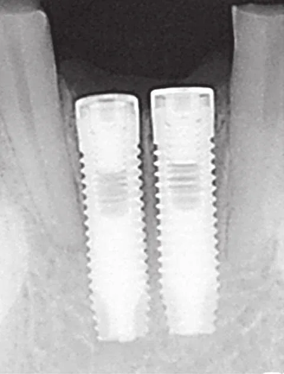
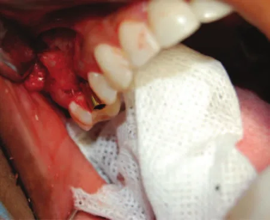

نسخه استخراجشده؛ ترجمه یا تأیید علمی انجام نشده است. وضعیت: captured
بحث موقعیت ایدهآل ایمپلنت را با تصاویری از موقعیتهای نادرستی شروع میکنیم که به افزایش موربیدیتی انجامیدهاند.
فاصلههای کلیدی:
• از دندان مجاور: دستکم ۱٫۵ تا ۲٫۰ میلیمتر — و ابزارهای موقعیتدهی امروز دقیقاً برای رعایت همین ساخته میشوند.
• از ایمپلنت مجاور: استئوتومی باید طوری بازموقعیتدهی شود که ۳ میلیمتر بین ایمپلنتها بماند.
چرا بیشتر از فاصله تا دندان؟ میان دو ایمپلنت، استخوان بیندندانی خونرسانی کمتری دارد — دندان طبیعی از راه لیگامان پریودنتال به این استخوان خون میرساند و ایمپلنت نه. با فاصلهی کمتر از ۳ میلیمتر، تحلیل استخوان کرستال بیش از دو برابر میشود (حدود ۱ میلیمتر در برابر ۰٫۴۵ میلیمتر) و پاپیلای میان دو ایمپلنت از دست میرود.
• از کانال آلوئولار تحتانی یا فورامن منتال: بیش از ۲ میلیمتر.
• عمق: ایمپلنتی که ۲ میلیمتر زیر CEJ فاسیال دندان مجاور قرار گیرد، ۳ میلیمتر فضای بافت نرم برای شکلگیری ظاهر طبیعی میدهد و بهترین است؛ در این عمق، سکوی ایمپلنت حدود ۳ میلیمتر زیر حاشیهی لثهی آزاد فاسیال قرار میگیرد. ایمپلنتی که کمتر از ۲ میلیمتر زیر حاشیهی لثهی آزاد بنشیند، بیش از حد سطحی است: امرجنس پروفایل نامناسب و خطر دیده شدن رنگ اباتمنت.
حالا اعدادی که نشان میدهند خطای زاویه چقدر گران است:
• هر ۱۰ درجه افزایش شیب ایمپلنت میتواند ۵ درصد افزایش در گشتاور واردشده بر ترمیم حین عملکرد بسازد.
• ۱ میلیمتر افزایش در آفست افقی ترمیم، ممکن است ۱۵ درصد افزایش گشتاور حین عملکرد تولید کند.
• ۱ میلیمتر افزایش در آفست عمودی، ۵ درصد اضافه میکند.
مقایسهی این سه عدد یک پیام روشن دارد: آفست افقی گرانترین خطاست — سه برابر آفست عمودی بهازای همان یک میلیمتر.
و پیامد پروتزی این خطاها: تاج بیشازحد کانتوردار، نیروهای برشی میسازد که میتواند به شل شدن پیچ، شکست پیچ و شکست ایمپلنت بینجامد. و وقتی فاصلهی کافی میان تاج بالینی مجاور و ایمپلنت نباشد، ساختن پروفایل اِمرجنس ایدهآل در پروتز نهایی دشوار و گاهی ناممکن میشود.
جراحی بدون فلپ — یک هشدار: جراحی فلپلس میتواند به موقعیت لینگوالی ایمپلنت بینجامد، با عارضهی تروما به بافت لینگوال و ساختارهای حیاتی در مندیبل. و گایدهای بافتی باید با پیچ استخوانی تثبیت شوند تا احتمال جابهجایی به حداقل برسد. ندیدن استخوان هزینههای دیگری هم دارد: حجم استخوان و سوراخ شدن کورتکس را نمیبینی، عمق را دقیق نمیسنجی، و بهویژه با گاید بافتی، خطر داغ شدن استخوان بالا میرود.

دهیسنس پلیت فاسیال. پس از کاشت ایمپلنت، دهیسنس پلیت فاسیال در سمت باکال غیرشایع نیست. و دلیلش ساختاری است: چون استخوان از سمت فاسیال تحلیل میرود، معمولاً پس از کاشت نهایی کمتر از ۱٫۵ میلیمتر استخوان فاسیال باقی میماند.
قاعدهی تصمیم: پس از کاشت، باید ۱٫۵ میلیمتر استخوان فاسیال موجود باشد وگرنه ناحیه باید پیوند شود.
و برای نقص عمودی دور ایمپلنت که هنگام باز کردن مرحلهی دوم پیدا میشود، سه سطح تصمیم:
• نقص عمودی کمتر از ۳ میلیمتر: میتوان نقص را کورتاژ کرد و ناحیه را با اتوگرفت بیشازحد پر کرد.
• نقص عمودی بیش از ۳ میلیمتر: معمولاً پیوند میشود.
• مگر نقص نیمی یا بیشتر از کل ارتفاع ایمپلنت باشد — که در آن صورت ایمپلنت باید خارج شود.
آن گزینهی سوم را جدی بگیر: خارج کردن ایمپلنت هم یک گزینهی درمانی است، نه اعتراف به شکست.
وقتی نقص بیش از ۳ میلیمتر پیوند و با ممبران پوشانده میشود، باز کردن مرحلهی دوم حدود ۲ تا ۴ ماه به تعویق میافتد، بسته به اندازهی نقص.
و یک عامل بیمار: دهیسنس استخوانی معمولاً با رسِس بافتی همراه است و این عارضه در بیماران با بایوتایپ نازک بارزتر است.
حالا عارضهای که میتواند تهدید حیات باشد. استنشاق تصادفی ابزارهای دندانپزشکی — مته، فرز، ایندیکیتور جهت، ریشه، تاج و غیره — میتواند به عوارض متعددی از جمله وضعیتهای تهدیدکنندهی حیات بینجامد.
و یک قاعدهی مطلق: گازهای ۲×۲ بهعنوان throat pack هرگز نباید در جراحی ایمپلنت استفاده شوند، چون بهراحتی میتوانند آسپیره شوند، بلعیده شوند، یا زیر فلپ بافت نرم جا بمانند.
هر سه پیامد در یک جمله آمدهاند و هر سه متفاوتاند: یکی اورژانس تنفسی، یکی مشکل گوارشی، و یکی عفونت دیررس محل جراحی.
و یک قاعدهی پایان کار: تمام محلهای پیوندشده باید پیش از بسته شدن، با استخوان باقیمانده درون متههای جراحی پر شوند — استخوانی که در فرزها جمع شده، خودش مادهی پیوند اتوژن است و راحت فشرده میشود. آلوگرفت اینجا ترجیح ندارد، چون پس از گذاشتن راحت جابهجا میشود و هزینهی اضافه دارد.

نوع سؤال: ساخت کلمه · 3 خانه
حروف منبع: ب · ی · ش